IES Valle del Alberche

📘 Presentación
Colección de problemas resueltos de formulación y nomenclatura de cicloalcanos (y algunos cicloalquenos y cicloalquinos), según las reglas IUPAC.
Los cicloalcanos son alcanos cuyos extremos de cadena están unidos formando un ciclo. Tienen dos hidrógenos menos que el alcano del que derivan, por lo que su fórmula molecular es CnH2n.
Se abordan, de forma progresiva:
- Cicloalcanos sin sustituyentes (ciclopropano, ciclobutano, ciclopentano, ciclohexano).
- Cicloalquenos y cicloalquenos con varios dobles enlaces (ciclohexeno, ciclooctadieno…).
- Cicloalcanos con uno, dos y tres o más sustituyentes.
- Ciclos con sustituyentes complejos y con dobles/triples enlaces en cadenas laterales.
- Paso inverso: dibujar la estructura a partir del nombre IUPAC.
🎯 Objetivo
- Reconocer la estructura de un cicloalcano y aplicar el prefijo ciclo-.
- Identificar cuándo el ciclo actúa como cadena principal y cuándo como sustituyente (cicloalquilo).
- Numerar correctamente el ciclo: localizadores más bajos al conjunto de sustituyentes y, en caso de empate, al sustituyente que va antes en orden alfabético.
- Dar prioridad al doble/triple enlace frente a los sustituyentes a la hora de numerar.
- Construir el nombre respetando el orden alfabético y las reglas de puntuación (guiones, comas, ausencia de espacios).
- Detectar y corregir nombres incorrectos de cicloalcanos.
🧪 TEORÍA Y PROBLEMAS RESUELTOS de cicloalcanos Pulsame
Teoría Nomenclatura de los cicloalcanos
Los cicloalcanos son alcanos que tienen los extremos de la cadena unidos, formando un ciclo. Tienen dos hidrógenos menos que el alcano del que derivan, por ello su fórmula molecular es CnH2n. Se nombran utilizando el prefijo ciclo seguido del nombre del alcano.
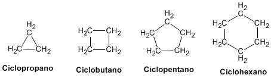
Es frecuente representar las moléculas indicando sólo su esqueleto. Cada vértice representa un carbono unido a dos hidrógenos.
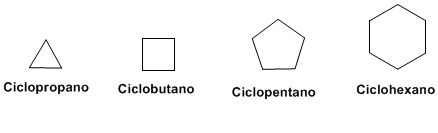
Si la cadena lateral es compleja, puede tomarse como cadena principal de la molécula y el ciclo como un sustituyente. Los cicloalcanos como sustituyentes se nombran cambiando la terminación –ano por –ilo.
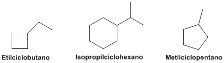
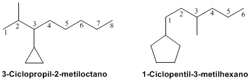
En caso de obtener los mismos localizadores al numerar comenzando por diferentes posiciones, se tiene en cuenta el orden alfabético.
- Los dobles y triples enlaces tienen prioridad sobre los sustituyentes a la hora de numerar: deben recibir los localizadores más bajos posibles (normalmente 1 y 2, o 1, 3… si están conjugados).
- El nombre del ciclo (por ejemplo ciclohex-1-eno) puede escribirse también como 1-ciclohexeno, pero la forma preferida por IUPAC coloca el localizador del enlace justo antes del sufijo.
- Cuando el ciclo actúa como sustituyente se usa el sufijo -il: ciclopropil, ciclobutil, ciclopentil, ciclohexil…
Ejercicio 1 Ciclopropano
Solución
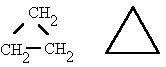
Ejercicio 2 Ciclobutano
Solución
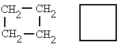
Ejercicio 3 Ciclopentano
Solución
Ejercicio 4 Ciclohexano
Solución
Ejercicio 5 Ciclohexeno
Solución
Ejercicio 6 1,5-ciclooctadieno o cicloocta-1,5-dieno
Solución
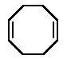
Ejercicio 7 1,1,2-trimetilciclopentano
Solución
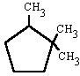
Ejercicio 8 4-etil-4,5-dimetilciclohexeno
Solución
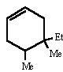
Ejercicio 9 4-etil-1,1,3-trimetilciclohexano
Solución
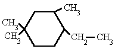
Ejercicio 10 4-etil-3-metilciclopenteno
Solución
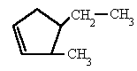
Ejercicio 11 Nombra el siguiente compuesto
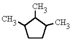
Solución
Nombre: 1,2,3-trimetilciclopentano
Ejercicio 12 Nombra el siguiente compuesto
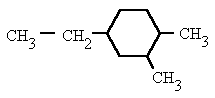
Solución
Nombre: 4-etil-1,2-dimetilciclohexano
Ejercicio 13 Nombra el siguiente compuesto
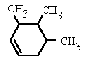
Solución
Nombre: 3,4,5-trimetilciclohex-1-eno
Ejercicio 14 Nombra el siguiente compuesto
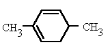
Solución
Nombre: 2,5-dimetilciclohexa-1,3-dieno
Ejercicio 15 Nombra el siguiente compuesto
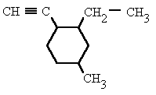
Solución
Nombre: 2-etil-1-etinil-4-metilciclohexano
Ejercicio 16 Nombra el siguiente compuesto
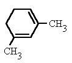
Solución
Nombre: 1,3-dimetilciclohexa-1,3-dieno
Ejercicio 17 Nombra el siguiente compuesto
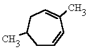
Solución
Nombre: 2,6-dimetilciclohepta-1,3-dieno
Ejercicio 18 Nombra el siguiente compuesto
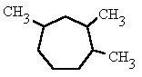
Solución
Nombre: 1,2,4-trimetilcicloheptano
Ejercicio 19 Nombra el siguiente compuesto
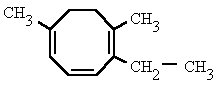
Solución
Nombre: 2-etil-1,6-dimetilcicloocta-1,3,5-trieno
Ejercicio 20 Nombra el siguiente compuesto
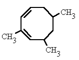
Solución
Nombre: 2,6,8-trimetilcicloocta-1,3-dieno
- Fórmula molecular general: CnH2n (dos hidrógenos menos que el alcano lineal correspondiente).
- El ciclo es la cadena principal cuando el número de carbonos del ciclo es mayor o igual que el de la cadena lateral más larga.
- Si la cadena lateral es más larga o más compleja que el ciclo, el ciclo pasa a ser un sustituyente (ciclopropil, ciclobutil, ciclopentil, ciclohexil…).
- Con un solo sustituyente no se numera (siempre es 1).
- Con dos o más sustituyentes: se numera para dar los localizadores más bajos al conjunto; en caso de empate, se asigna el más bajo al sustituyente que va primero en orden alfabético.
- Los dobles y triples enlaces tienen prioridad sobre los sustituyentes a la hora de numerar.
- Los prefijos de cantidad (di, tri, tetra…) no alfabetizan; los prefijos iso y neo sí alfabetizan.
- Puntuación: los números se separan de las letras con guiones, los localizadores entre sí con comas y nunca se dejan espacios.